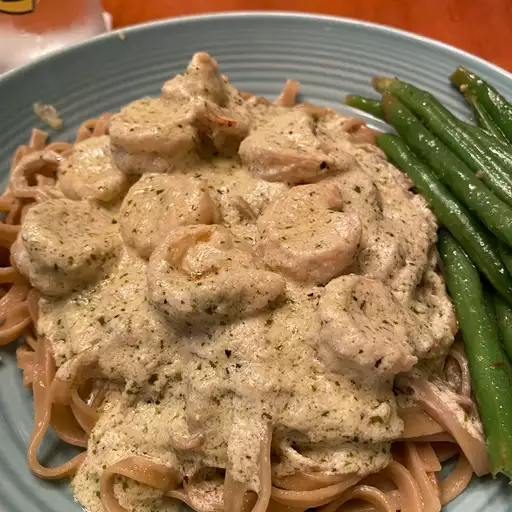

Shrimp Pesto Pasta!

Description
A delicious pasta dish that uses pesto and heavy whipping cream
to create a creamy,garlicy taste. Also, shrimp is yummy!
Ingredients
- 2 Bags of Uncooked Shrimp
- 3/4 Box of Penne/Angel Hair Pasta
- 1 Bell Pepper
- 6 Cloves of Garlic
- 2 Classic Filippo Berio Jars of Pesto
- 1 Pint of Heavy Cream
- 1/4 Stick of Butter
- Salt n Pepper
Steps
- Thaw and devein shrimp.
- Cut up pepper into small pieces.
Mince garlic.
- Begin to boil pasta.
- Cook shrimp in pan until bright orange.
- Add peppers and garlic to pan and season with salt n pepper
- Put butter into finished pasta after draining the water
and then add the pasta to the pan.
- Add pesto jars and heavy cream.
- Bon Appetit!